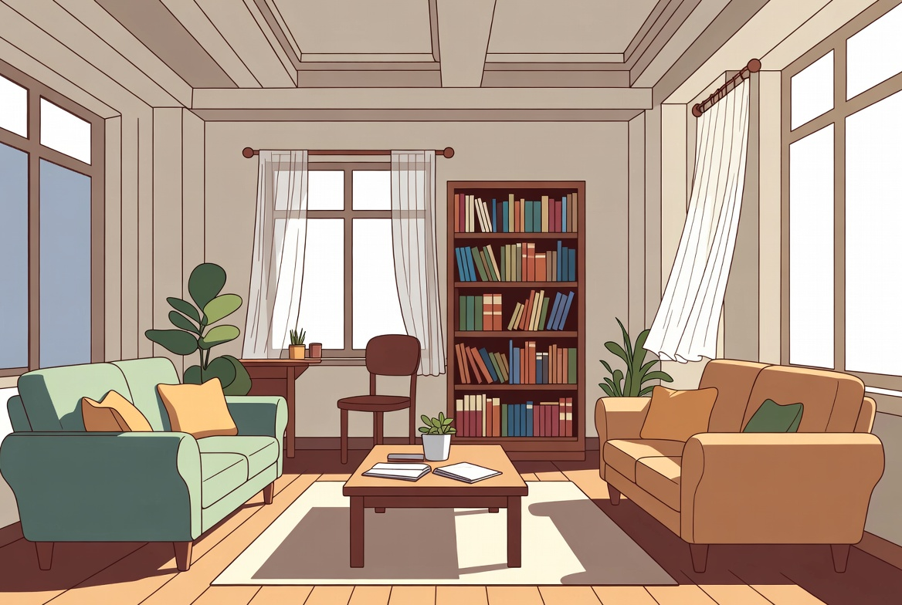

Alemão A1 · Aula 6 de 30 · GrátisFamília e pessoas
Nesta aula você vai aprender a apresentar familiares e falar de parentes.
 Lektion 6
Lektion 601 · Primeiro, escuteDiálogo em contexto
Ouça a conversa completa e acompanhe a tradução em português.

Anna e LukasWer ist das?Quem é essa pessoa?
02 · Frases essenciaisEscute e repita
Aprenda cada expressão como um bloco completo.
01Wer ist das?
Quem é essa pessoa?
02Das ist meine Schwester Laura.
Essa é minha irmã Laura.
03Hast du Geschwister?
Você tem irmãos?
04Ja, ich habe eine Schwester und einen Bruder.
Sim, tenho uma irmã e um irmão.
05Wohnt deine Familie in Brasilien?
Sua família mora no Brasil?
06Ja, meine Eltern wohnen dort.
Sim, meus pais moram lá.
07das ist
A situação completa
08wer ist das?
A situação completa
03 · Entenda a lógicaExplicação em português
O alemão fica visível; a explicação ajuda você a entender como usar.
Explicação 1Geschwister
já significa 'irmãos e irmãs juntos' e é sempre plural; não existe 'um
Explicação 2wie
como: são três palavrinhas parecidas com sentidos bem diferentes.
Explicação 3Dein Beispiel
Agora tente apresentar familiares e falar de parentes, trocando uma informação por algo verdadeiro sobre você.
04 · FixaçãoTeste o que aprendeu
Escolha a tradução correta e confira na hora.